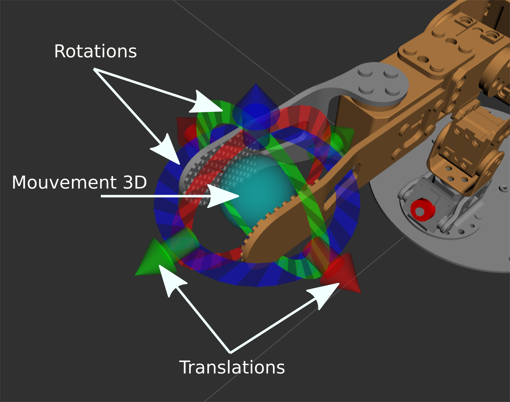

- VII. Simulation avec Gazebo
VII. Simulation avec Gazebo
En robotique il est souvent très utile de pouvoir travailler en simulation. Un simulateur physique permet essentiellement de simuler des forces/couples sur des objets et des articulations. Gazebo est un environnement de simulation physique pour robotique, supporté par ROS. Nous nous servirons de la simulation dans Gazebo de manière transparente, "comme si" il s'agissait du véritable robot.

La simulation va nous permettre:
- De charger des modèles URDF
- De simuler des moteurs
- De simuler une caméra
- De simuler les contacts
Notons que Gazebo est constitué d'un serveur (non graphique, gzserver) et d'un client (graphique, gzclient) ce qui permet également de calculer une simulation sur une machine distante par exemple.
Lancement de Gazebo avec un monde "vide"
roslaunch gazebo_ros empty_world.launch Ce que nous allons utiliser, mais il est bien sur possible de créer des environnements plus complexes.
Chargement d'un modèle
Les modèles sont décrit par un fichier xml selon la norme URDF (Universal Robot Description Format).
Un simple cube
Dans poppy_ergo_jr_gazebo/urdf on peut voir la définition d'un cube. Pour charger cet URDF dans Gazebo: rosrun gazebo_ros spawn_model -file cube.urdf -urdf -model test -x 0 -y 0 -z 1
- Quelles sont les dimensions du cube?
- Quelle est la masse du cube?
- Expérimentez pour expliquer la différence entre
visualetcollision(menuView/Collisions) - Observez la position du cube avec
rostopic echo -n 1 /gazebo/model_states - Modifiez cette position avec
rosservice call /gazebo/set_model_state [TAB](Utilisez la complétion du terminal avec [TAB] pour remplir le message) - Appliquez une force de 10N selon l'axe x pendant 5s sur le cube en utilisant:
rosservice call /gazebo/apply_body_wrench(Quel est le "bodyname" à utiliser?)
Pour supprimer le modèle: rosservice call gazebo/delete_model "model_name: 'test'"
Chargement du modèle du robot
On utilise ici un format intermédiaire "xacro", permettant d'ajouter un capacité de "script" (pour calculer des position par exemple) et générer un URDF. On peut visualiser la topologie du modèle avec: urdf_to_graphiz poppy_ergo_jr.urdf (un pdf est généré)
Ouvrez le PDF obtenu puis déterminez :
- Que représentent les rectangles ?
- Que représentent les bulles ?
- Que représentent les flèches et surtout les valeurs xyz et rpy associées ?
Pour importer le modèle dans Gazebo: roslaunch poppy_ergo_jr_gazebo load_ergo_model.launch On peut "explorer" le modèle dans le menu à gauche. Pour mieux visualiser les articulations: View/Transparent View/Joints
Le modèle s'effondre car les moteurs ne sont pas simulés.
- Appliquez un couple de -0.5Nm sur l'articulation
m2pendant 3s avec:rosservice call /gazebo/apply_joint_effort [TAB]
Chargement des contrôleurs de moteurs
Afin de rentre la simulation plus réaliste, nous allons lancer des contrôleurs de moteurs qui vont simuler le comportement de moteurs réels. Il existe plusieurs type de contrôleurs disponible dans Gazebo, nous allons tout d'abord expérimenter avec les contrôleurs en position les plus simples.
- lancez:
roslaunch poppy_ergo_jr_gazebo load_ergo_position_controllers.launchOn constate la création detopicspour chaque contrôleur - Envoyez des commandes en position:
rostopic pub /ergo_jr/m2_position_controller/command [TAB] [TAB] - Comment contrôler la position de la pince dans l'espace cartésien?
MoveIt
Dans le cas général, calculer les mouvements nécessaires pour atteindre un objectif sans collision est un problème compliqué (cf. robotique théorique). Cette tâche est effectuée par un planificateur, tel quel MoveIt qui intègre:
- Le modèle cinématique du robot (à partir de l'URDF)
- Une gestion des collisions (internes et avec l'environnement)
Un planificateur de trajectoire

Démarrer MoveIt
Précédemment nous avons expérimenté avec les contrôleurs en position. MoveIt a besoin de contrôleurs légèrement différents (contrôleurs de trajectoire).
- Lancez tout d'abord Gazebo et charger le modèle du robot. Puis lancez les contrôleurs en trajectoire avec:
roslaunch poppy_ergo_jr_gazebo load_ergo_controllers.launch⇒ Vous pouvez aussi combiner ces 3 étapes avec un seul fichier .launch:roslaunch poppy_ergo_jr_gazebo start_gazebo.launch gripper:=true lamp:=false - Lancez MoveIt avec:
roslaunch poppy_ergo_jr_moveit_config start_moveit.launch gripper:=true lamp:=false - Essayez de manipuler le robot: 
- Dans
Query/Planning Groupsélectionnezarm, dansOptionscochezAllow Approx IK Solutions - Cliquez sur
Planning/Plan and Executeobserver Rviz et Gazebo
Créer un node python pour contrôler le robot
Créer un package ROS ros4pro
cd ~/catkin_ws/src
catkin_create_pkg ros4pro # Cette commande créé le package
mkdir -p ros4pro/src # On créé un dossier src dans le package
touch ros4pro/src/manipulate.py # On créé un noeud Python "manipulate.py"
chmod +x ros4pro/src/manipulate.py # On rend ce noeud exécutable pour pouvoir le lancer avec rosrun
Éditer manipulate.py
- Nous allons avoir besoin des imports suivants:
#!/usr/bin/env python
import rospy
from moveit_commander.move_group import MoveGroupCommander
from geometry_msgs.msg import Pose
from math import radians, cos, sin
import tf_conversions as transform
rospy.init_node('ros4pro_node')
- Pour utiliser le "commander" MoveIt il faut déclarer:
commander = MoveGroupCommander("arm")
- Il est possible de récupérer la "pose" actuelle:
current_pose = commander.get_current_pose().pose
- Faites bouger le robot et affichez cette pose. Quelle est la pose initiale?
- Créez une nouvelle pose (cf. le message [[https://docs.ros.org/en/api/geometry_msgs/html/msg/Pose.html][Pose], modifiez la position et l'orientation ce cette pose et exécutez là:
commander.set_pose_target(pose) #envoie la pose au commander
plan = commander.go(wait=True) #éxécute le mouvement avec attente
commander.stop() #force l'arrêt du mouvement pour plus de sécurité
commander.clear_pose_targets() #force le nettoyage des objectifs du commander pour plus de sécurité
Pour nous aider on peut créer un quaternion à partir d'une rotation au format Roll/Pitch/Yaw avec:
q = transform.transformations.quaternion_from_euler(roll, pitch, yaw)
q retourné est une liste de 4 éléments contenant x, y, z, w roll, pitch, yaw sont des angles en radian (la fonction radians(angle) permet de convertir des degrés en radians)
Utiliser la pince
- Lancez le service avec
rosrun poppy_ergo_jr_gazebo gripper_gz_service.py - Il est possible d'ouvrir/fermer la pince avec la commande:
rosservice call /ergo_jr/close_gripper "data: false"pour ouvrir la pince, et "true" pour la fermer. - Pour utiliser ce service dans votre
nodese référer à la documentation On notera que le type du service estSetBooldéfini dans le modulestd_srvs.srv - Charger des cubes dans l'environnement de simulation avec
roslaunch poppy_ergo_jr_gazebo spawn_cubes.launchLes cubes sont placés sur un rayon de 0.21m par rapport au référentiel avec des angles de -25°, 0° et +25° - Essayez d'attraper chacun des cubes
- Essayer d'empiler les cubes en -25° et +25° sur le cube en 0°
Ajouter des obstacles
- Nous allons avoir besoin du message
PoseStampeddéfini dans le modulegeometry_msgs.msg Il est possible d'ajouter un obstacle pour MoveIt comme ceci par exemple:
scene = PlanningSceneInterface() rospy.sleep(1) #petite attente nécessaire ps = PoseStamped() ps.header.frame_id = "base_link" ps.pose.position.x = 0.0543519994715 ps.pose.position.y = -0.202844423521 ps.pose.position.z = 0.1 q = transform.transformations.quaternion_from_euler(0, 0, radians(15)) ps.pose.orientation.x = q[0] ps.pose.orientation.y = q[1] ps.pose.orientation.z = q[2] ps.pose.orientation.w = q[3] scene.add_box("obstacle", ps, (0.025, 0.1, 0.2)) #dimensions de la boiteOn peut ensuite enlever l'obstacle avec:
scene.remove_world_object("obstacle")Créez un mouvement pour attraper un cube en évitant cet obstacle
Nous voulons maintenant utiliser ce mécanisme pour ajouter les cubes comme obstacles au fur et à mesure que nous les empilons
- Ajouter
cube1comme obstacle - Attraper
cube2, le poser surcube1et ajoutercube2comme obstacle - idem pour
cube3
Les positions des objets sont publiés en temps réel par Gazebo dans le "topic"
/gazebo/model_states
📚 Auteurs
Jessica Colombel (Inria), Rémi Fabre (CATIE), Jean-Baptiste Horel (CATIE), Yoan Mollard (Bordeaux INP), Alexandre Péré (Inria), Steve N'Guyen (LaBRI) .
💬 Besoin d'aide ?
Posez votre question sur le forum francophone des utilisateurs de ROS.
📅 Dernière mise à jour : 2021-01-03T19:14:24+01:00
- Ajouter